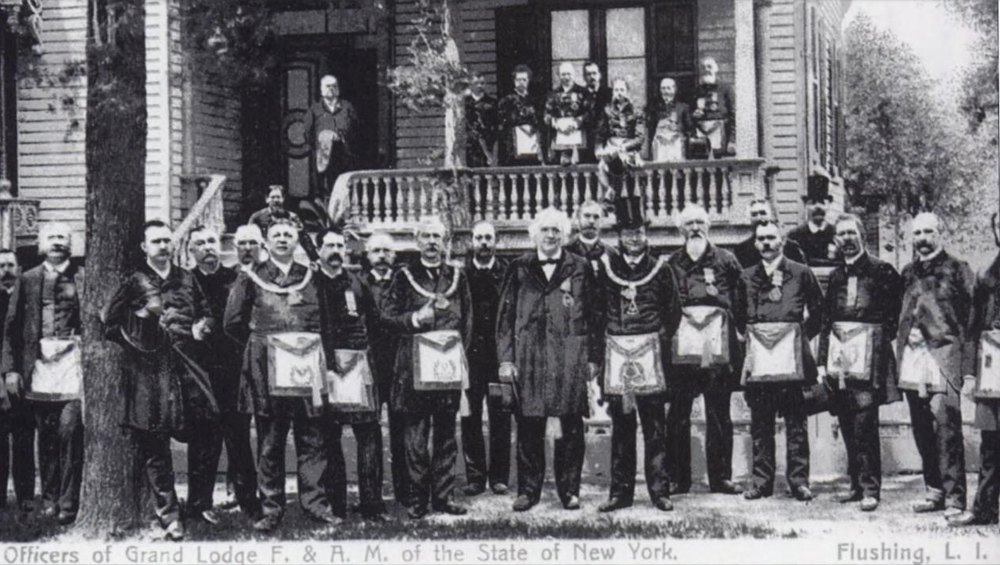
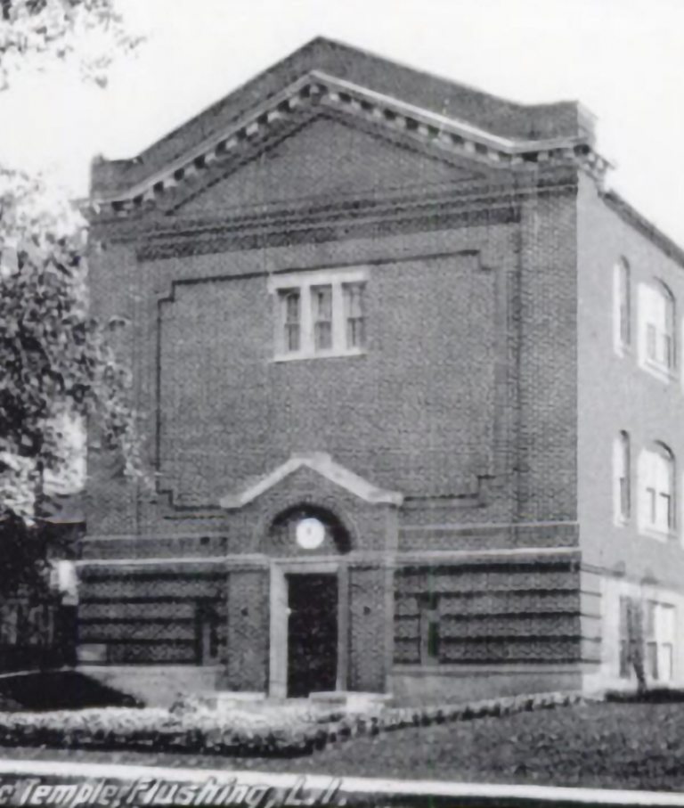
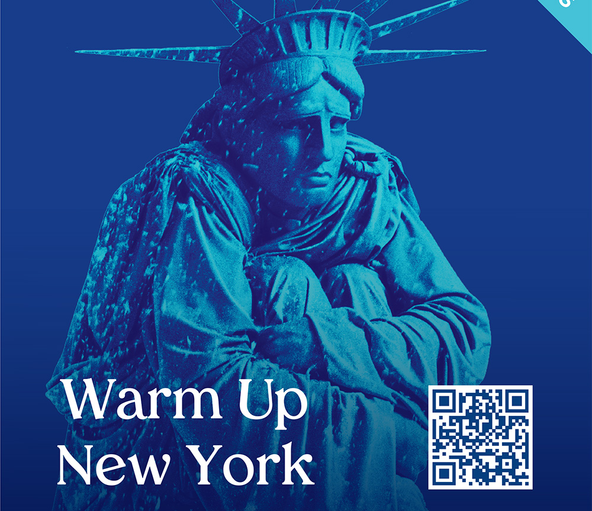

Over 100 Years of Brotherhood
Founded in 1923, Cornucopia Lodge 563 has been a cornerstone of our community for more than a century. What began as a small gathering of like-minded men has grown into a vibrant organization dedicated to making a positive impact.

The Beginning
A century ago, when the Civil War was being fought to its climax, members of the Craft living in and near Flushing Village, imbued with a love of Masonry, set about forming a Masonic Lodge. On September 12th, 1864, a Dispensation was issued to Cornucopia Lodge, the first Masonic organization to be formed in the Village of Flushing. The Dispensation was signed by Most Worshipful Clinton F. Paige, Grand Master.

Day One
The first communication U.D. was held on September 14, 1864. The By-Laws of Keystone Lodge No. 235 were adopted as the By-Laws to be used by Cornucopia U.D. Morton Lodge No. 63 of Hempstead and Jamaica Lodge No. 546 recommended the granting of the Dispensation.

The Edifice
On June 13, 1908, Cornucopia Lodge #563 laid the cornerstone for its Masonic Temple at the corner of Northern Boulevard and Union Street in Flushing. This multi-story brick structure became the first of its kind in the area and was dedicated later that year on November 26. The temple, built at a cost of $40,000, became a gathering place for countless social events and Masonic rituals.
Moving Forward
For over eight decades, the Cornucopia Lodge Temple was a cornerstone of Flushing's cultural heritage. However, in 1990, rising real estate taxes forced the Lodge to sell the building. The temple faced demolition in 2018, but the memories of the historic lodge remain vivid, representing a chapter of resilience and brotherhood in Flushing's evolving landscape.

Notable Members
Cornucopia Lodge No. 563 has a rich history of distinguished members including Brother Marshall P. Wilder (celebrated actor), Brother Daniel Carter Beard (founder of the Boy Scouts of America), Brother John W. Crawford (Y.M.C.A. builder), and Right Worshipful George U. Harvey (Queens Borough President). Today, we continue to be home to distinguished members serving in government and prominent fields.